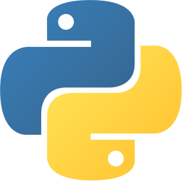

Case study · Cabify Spain · Apr to Sep 2026
Automated KPI Monitoring
A weekly operations review used to start with each process owner opening their own source, copying the numbers and pasting them into a shared document the day before. The data arrived late, degraded on the way and had no history. I inverted the flow: the numbers extract themselves every morning, keep their history, get judged against a realistic range and go to find their owner.

PythonHow it works
Every morning a Python job reads the KPIs from their sources, stores every reading in PostgreSQL with its extraction date, computes a range, a state and a forecast, and rebuilds the data behind a small web board. Each owner has a link that opens only their processes, and once a week they get one message with the KPIs that need discussing and nothing else.
How each KPI is judged
First the realistic range: what is normal for that KPI according to its recent weeks, a rolling median plus or minus a multiple of its typical spread, with holiday periods left out. A KPI needs a few clean weeks before it is judged at all. Then the week's value is compared with that range and with the owner's target, if there is one.
The bad side depends on the KPI: for a completion rate it is going down, for a cancellation rate it is going up, so changes are coloured by what they mean, not by their direction.
The range is computed by the system ("if nothing changes, this is normal"); the target is set by a person ("this is where we want to be"). Owners set their own targets on the board, and a target lets a new KPI be judged before it has enough history.
● Average wait at pickup · off track, above its usual range for 2 weeks
● Completion rate · inside its range but below your target
● Everything else: nothing to look at
Open your board to see the history and the forecast.
Version 1: reading screenshots
With no API access at first, I built an n8n workflow that opened each dashboard, captured it as an image, asked a vision model for the numbers as strict JSON and wrote them to a weekly sheet. It worked, but image extraction occasionally invented a digit, and there was no cheap way to catch it before the meeting. That was the reason for version 2: read the data, never the picture of the data.
What I learned
- A range computed from the KPI's own history is more useful than a fixed threshold: it knows that some KPIs are noisy and others never move.
- Send people less. One message with the three things that matter gets read; a report with everything does not.
- A vision model is a fine stopgap for extraction, and a poor source of truth.
Described at a high level on purpose: no screenshots, KPI names or figures from the company. Charts and messages are illustrative.